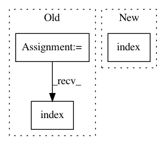

3e12d49324793d4798ee10bb6ef6a1c1b7633baf,python/caffe/pycaffe.py,,_Net_backward,#,85
Before Change
diffs = []
if start is not None:
start_ind = [lr.name for lr in self.layers].index(start)
else:
start_ind = len(self.layers) - 1
if end is not None:
After Change
diffs = []
if start is not None:
start_ind = list(self._layer_names).index(start)
else:
start_ind = len(self.layers) - 1
if end is not None:
In pattern: SUPERPATTERN
Frequency: 3
Non-data size: 3
Instances
Project Name: BVLC/caffe
Commit Name: 3e12d49324793d4798ee10bb6ef6a1c1b7633baf
Time: 2014-09-01
Author: jonlong@cs.berkeley.edu
File Name: python/caffe/pycaffe.py
Class Name:
Method Name: _Net_backward
Project Name: BVLC/caffe
Commit Name: 3e12d49324793d4798ee10bb6ef6a1c1b7633baf
Time: 2014-09-01
Author: jonlong@cs.berkeley.edu
File Name: python/caffe/pycaffe.py
Class Name:
Method Name: _Net_forward
Project Name: nilearn/nilearn
Commit Name: fe43f79a15a3e109c2743fa666b223957026dc47
Time: 2017-02-23
Author: ju.huntenburg@gmail.com
File Name: examples/01_plotting/plot_surf_stat_map.py
Class Name:
Method Name: